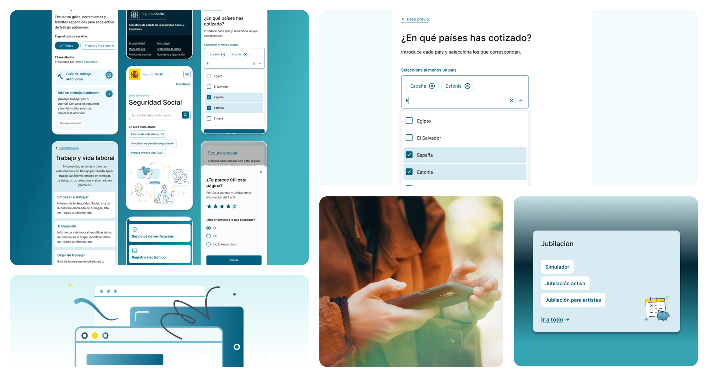
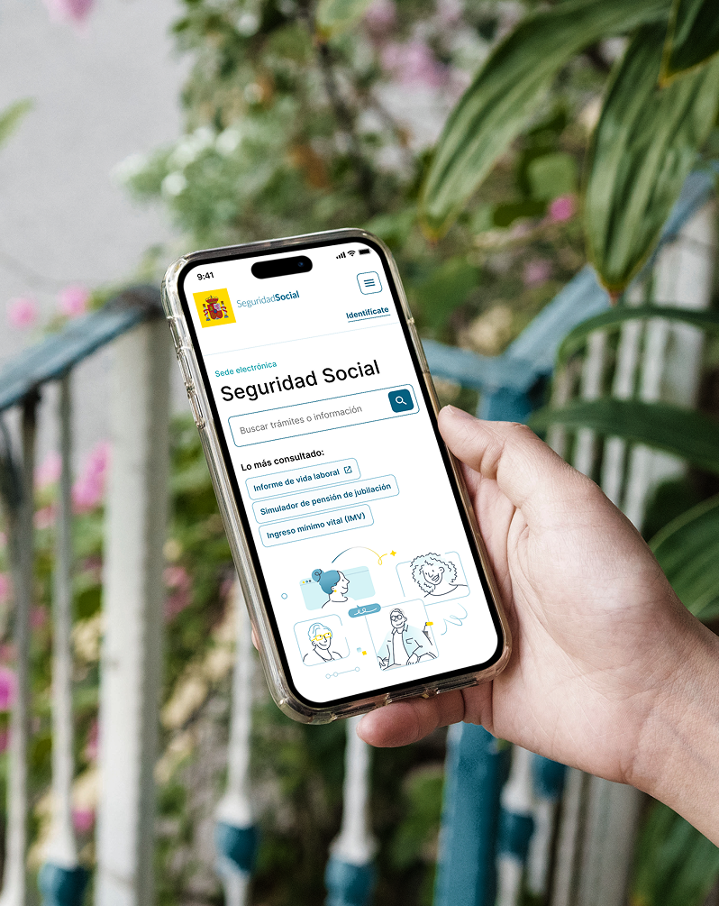
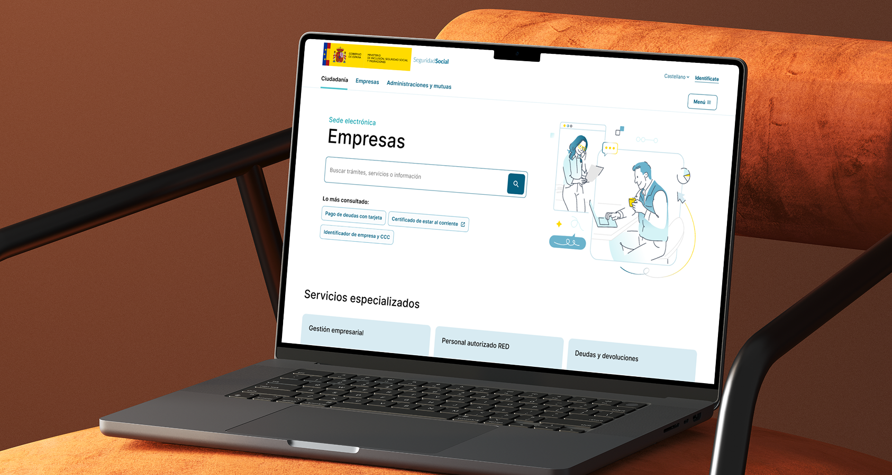

Sede electrónica de la Seguridad Social
- UX/UI Design
- Design Systems
- Accessibility
- Public Sector
Rediseño de uno de los portales públicos más visitados de España. El reto: aportar claridad y accesibilidad a un entorno de información de alto volumen utilizado por millones de ciudadanos cada día.

Como parte del equipo de diseño para el rediseño 2025-26, contribuí a dar forma a la experiencia de usuario de una plataforma que impacta directamente en millones de personas. Mi trabajo se centró en la composición y maquetación de pantallas, estableciendo jerarquías visuales claras en un entorno con mucho contenido donde la estructura y la legibilidad son críticas para los ciudadanos que navegan por procesos administrativos complejos.

Más allá del diseño de pantallas, participé en la construcción y adaptación de componentes para garantizar la consistencia y escalabilidad del sistema de diseño. Participé en la definición de tokens de color y estilos tipográficos siguiendo criterios estrictos de accesibilidad, asegurándome de que la interfaz satisficiera las necesidades de una base de usuarios diversa y amplia. También produje documentación detallada que sirvió de puente entre diseño y desarrollo, agilizando la colaboración y reduciendo la ambigüedad en cada etapa de entrega.

Este proyecto fue uno de los más exigentes en los que he trabajado, tanto en escala como en responsabilidad. Contribuir a un diseño más coherente, accesible y sostenible para la plataforma digital de la Seguridad Social española significó trabajar con precisión y propósito en cada paso. El resultado es una experiencia más clara y navegable para los ciudadanos, y una base mejor documentada para los equipos técnicos que la mantienen y desarrollan.